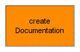

With a double-click on this block, a documentation with all relevant information about the current X2C project can be created. The document will be created in <ProjectDir>\Doc and will be called ProjectDocumentation_<NameOfModel>.pdf.
User documentation: It is possible to add user specific documentation to the project documentation. When creating the project documentation, the X2CCode directory is scanned for the specifed tex file (UserDoc.tex by default). If the file is present, it will be included in the documentation.
Test reports: If the checkbox Add test reports is selected, test reports of the C-Unit tests of the used X2C blocks are added to the project documentation.
In order to generate a documentation in PDF-format a TeX-compiler (e.g. MiKTeX) has to be installed. The software tools Doxygen and Graphviz are recommended to get documentation of the C-code.